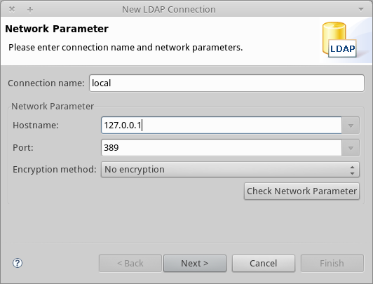
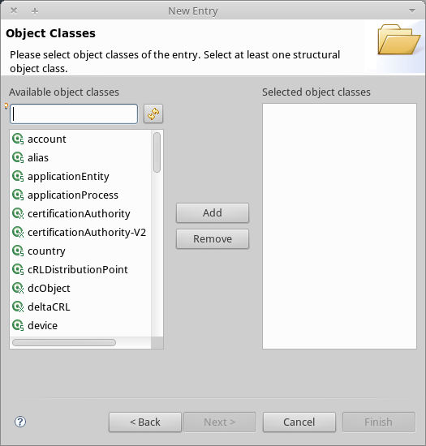
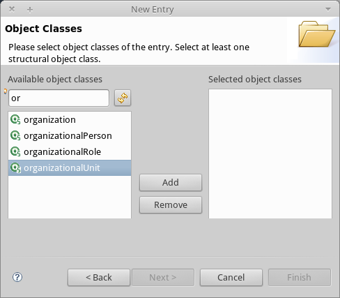
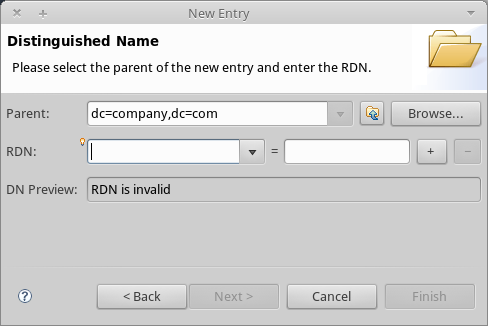
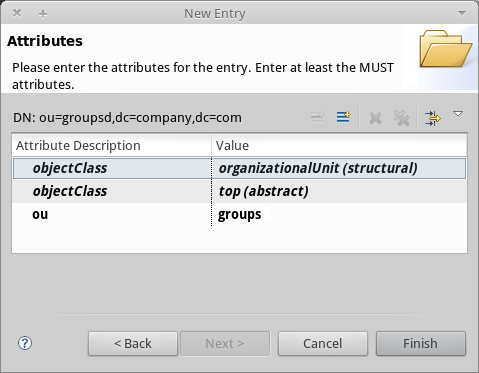
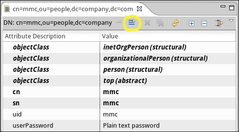
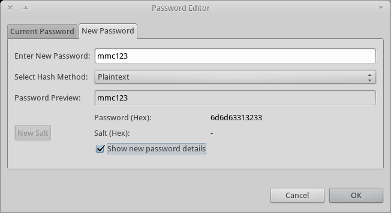
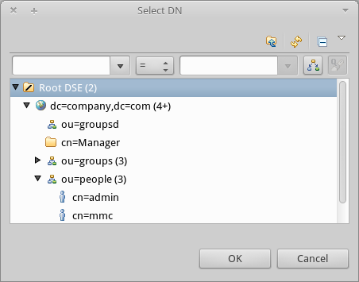

Setting Up and Managing Users via LDAP
| The Lightweight Directory Access Protocol (LDAP), is a public standard that facilitates distributed directories (such as network user privilege information) over the Internet Protocol (IP). The many available LDAP servers include free-use open source projects. The particulars of installing, running and configuring LDAP servers fall outside the scope of this document; however, this document does provide an example of a simple LDAP configuration, including basic instructions for installing and running an LDAP server on a Linux system. |
| The Mule Management Console provides REST APIs for programmatic access to much of the console’s functionality, including cluster management, applications, flows and deployments. You can also use the REST API to configure automated replication of LDAP user groups. |
Overview
You can configure a Mule console to leverage an LDAP server for user authentication. In this use case, the LDAP server creates and manages users, and no information about users is stored on the console. Group information is managed both on the LDAP server and on the console.
The following table lists user and group information, specifying where it is stored and managed:
| Information | Management and Storage |
|---|---|
User names and passwords |
LDAP database |
Groups names and group members |
LDAP database |
Groups names and group permissions |
Console |
Groups have to be created both on the LDAP server and on the console. When the console authenticates a user through LDAP, it requests the user’s group information from the LDAP server, and then assigns the appropriate permissions for the user based on the groups to which the user belongs.
When using LDAP, the console needs to authenticate itself on the LDAP server to gain access to the LDAP database. The console needs to log in with a user account defined on the LDAP database. This user account can be any one of the accounts set up for users of the console, or it can be a separate account altogether (not belonging to any group) whose sole purpose is to authenticate the console.
For example, you can create a user on the LDAP database called mmc, and configure the console to connect to the LDAP server using the credentials for this user. When a user logs into the console — as user admin, for example — the console first authenticates itself on the LDAP server using the credentials for user mmc. Then, it sends admin 's credentials to the LDAP server. If admin 's credentials are valid, the LDAP server provides the console with admin 's group information. The console then grants appropriate permissions to admin in accordance with the permissions specified for the groups to which admin belongs.
The last section of this document provides an Example: A Simple LDAP Setup detailing this configuration.
To configure the console to authenticate users via LDAP, perform the following high-level tasks:
Obtain LDAP Parameters
Ask your LDAP server administrator for the following information:
-
The LDAP host and listening port. The host can be an IP address or hostname. Example:
192.168.1.14on port389. -
The LDAP user account credentials that the console uses to connect to LDAP. This is the user account configured on the LDAP server that allows the console access to the database storing information about the console users. Example: user:
mmcpassword:mmc123 -
Structure of the LDAP tree that stores user and group information for console users. This data provides the base context and attributes that the console uses to search within LDAP for users. The LDAP server administrator can export these values from the LDAP server onto a text file called an LDIF file (for LDAP Data Interchange Format). The Example: A Simple LDAP Setup provided in this document includes the LDIF export for the illustrated working configuration (see Populating the LDAP database by importing an LDIF file)
Set Up Users and Groups on LDAP
You must create all users on the LDAP server. In other words, it is not possible to create users on LDAP via the console, since the console can only read the LDAP database, and cannot write to it.
User groups must be created on LDAP, and also on the console. As described above, group permissions are defined and stored on the console.
The following table lists user- and group-related tasks, specifying whether they are performed on the console or the LDAP server (or both).
| Description | Performed on the console | Performed on the LDAP server |
|---|---|---|
Create users |
X |
|
Set user passwords |
X |
|
Create groups |
X |
X |
Assign users to groups |
X |
|
Set group permissions |
X |
You must create all console users under the same subtree of the LDAP database, since the console searches for these users under a single base context. For example, you can create all users under the same organizational unit. In such a case, all console users share the same Relative Distinguished Name (RDN), such as ou=people,dc=company,dc=org.
Enabling LDAP on the Console
You must enable LDAP on the console so that the console can authenticate users against the LDAP server. The procedure involves two steps:
These steps involve the following two files:
-
<Mule install path>/apps/mmc/webapps/mmc/WEB-INF/web.xml, which instructs the console to enable the LDAP spring profile, which is necessary for LDAP authentication.
-
<MMC install path>/apps/mmc/webapps/mmc/WEB-INF/classes/mmc-ldap.properties, which contains the information necessary to connect to an LDAP server and to search for users on that server.
Enabling the LDAP Spring Profile
Complete the following steps:
-
Navigate to the following directory: <Mule install path>/apps/mmc/webapps/mmc/WEB-INF
-
Locate the file web.xml.
-
Open it with your favorite text editor, then locate the following line:
<param-name>spring.profiles.active</param-name> -
Modify the next line to add the LDAP Spring profile as a value:
<param-value>tracking-h2,env-derby,ldap</param-value>
Creating the LDAP Configuration File
Complete the following steps:
-
Navigate to the classpath directory: <MMC install path>/apps/mmc/webapps/mmc/WEB-INF/classes/META-INF
-
Create a file called
mmc-ldap.properties. This is the LDAP configuration file.For Tomcat, the classpath directory is <TOMCAT_INSTALL_PATH>`/lib`. -
Include in this configuration file all the required parameters, substituting the values specific to your environment into the listing below:
providerURL=ldap://192.168.1.14:389/ userDn=cn=mmc,dc=company,dc=com password=mmcadmin usernameAttribute=uid userSearchBaseContext=ou=people,dc=company,dc=com userSearchFilterExpression=(uid={0}) userSearchBase=ou=people,dc=company,dc=com userSearchAttributeKey=objectclass userSearchAttributeValue=person roleDn=ou=groups,dc=company,dc=com groupSearchFilter=(member={0})The following table describes the properties set through the configuration file:
| Property | Description |
|---|---|
|
URL, including listening port, of the LDAP server |
|
Distinguished Name (DN) of the console user, i.e. the user the console uses to log in to the LDAP server and gain access to the LDAP database. |
|
The password of the console user. This is the password property of the |
|
Used to override the default value of the |
|
The base context within the LDAP tree structure in which the console searches for users. This is the first |
|
A filter expression used to find entries in the LDAP database that match a particular user. For example, (uid={0}) looks for an entry whose |
|
The base context in the LDAP database in which the console searches for users. This is the ( |
|
The attribute used to search for users on the LDAP server. This is the ( |
|
This is the value of the attribute used to search for users on the LDAP server. |
|
The DN of the context used to search for groups to which the user belongs. This is the second <constructor-arg> of the |
|
A filter expression that finds roles. For instance, |
You can configure user and group search parameters to suit the structure of the LDAP database containing user entries.
Creating MMC User Groups
As mentioned Set Up Users and Groups on LDAP, you need to create users only on the LDAP server, and user groups both on the LDAP server and the Management Console. There are two methods for creating user groups on the console, described below.
Method One: Using the LDAP Administrators Group
-
On the LDAP server, create a group called
Administrators. -
Define a user belonging to that group.
-
Enable LDAP on the console.
-
Log in to the console as the user who belongs to the
Administratorsgroup. The console automatically assigns full administrative privileges to any user belong to theAdministratorsgroup, so you now have full privileges on the console. -
Create other groups on the console and assign to them the desired permissions.
You preform all further user configuration, such as adding/removing users from groups, on the LDAP server. Once finished, you may remove the Administrators group from the LDAP server if you desire.
Using the Console’s Administrator Role to Set Up Groups
Assume that the domain for the LDAP database is company.com. Users are stored in the Organizational Unit people, and groups are stored in the Organizational Unit groups.
On the LDAP server:
-
Create a user, for example
admin. The DN of the user is:cn=admin,ou=people,dc=company,dc=com. -
Set the user’s password.
-
Create a group called
Administrators. The DN of the group is:cn=Administrators,ou=groups,dc=company,dc=com. -
Set the attribute
memberof groupAdministratorsto include useradmin.
On the console:
-
Stop the console.
-
Enable LDAP on the console (see instructions Enabling LDAP on the Console).
-
Re-start the console.
-
Log in as user
admin, using the password set on the LDAP server.
The console authenticates you as user admin on the LDAP server, belonging to the group Administrators. So after you log in, the Dashboard provides full functionality provided for users with administrative privileges:
You can now create new groups, and modify the permissions of existing groups. To do so, click Manage Users and Permissions on the Dashboard, or click Administration, then User Groups.
After creating/modifying groups to your desired configuration, you may remove the Administrators group from the LDAP server if desired.
Method Two: Creating Groups on the Console Without LDAP Enabled
-
Create all necessary users and groups on the LDAP server.
-
Launch the console without LDAP enabled.
-
Log in to the console.
-
Create groups that match the groups already created on the LDAP server.
-
Assign appropriate permissions to each group.
-
Stop the console.
-
Enable LDAP on the console.
-
Restart the console, then log in.
Example: A Simple LDAP Setup
This example illustrates a simple LDAP configuration, in which the LDAP server and the console exist on the same machine. Specifically, the exercise covers installation and basic configuration of an LDAP server on a Debian-based Linux system. To complete the steps described below, you should be familiar with software installation and configuration on Linux systems.
The Environment
This example was created using the following system specifications:
-
OS: Linux (Xubuntu 12.04 LTS, based on Debian 7 “Wheezy/Sid”). Homepage: xubuntu.org
-
LDAP Server: OpenLDAP. Homepage: openldap.org
-
LDAP browser: Apache Directory Studio. Homepage: apache.org/studio
This example provides a basic overview of the following tasks:
-
Download and install the OpenLDAP server and utilities
-
Downloading and Installing the Apache Directory Studio LDAP Browser
-
Create LDAP users and groups using Apache Directory Studio (or alternatively, create the users and groups by importing an LDIF file)
Downloading and Installing the OpenLDAP server
OpenLDAP Installation Options
OpenLDAP is a free, open source LDAP server available for many platforms including most flavors of Unix, Linux, Mac OS X, and Windows. The easiest way to set up OpenLDAP is to install the appropriate packages within a Linux distribution such as Debian, Suse, Red Hat, etc.
The OpenLDAP project distributes the software only in source form, which can be obtained here. Be sure to check the FAQ here.
Additionally, several third-party, prepackaged versions are available for download. Of these, the Symas Corporation includes a paid version for Microsoft Windows.
Installing on Debian-Based Linux Distributions
The OpenLDAP server and the client programs are available in separate packages, respectively called slapd and ldap-utils. The ldap-utils package includes client utilities such as ldapadd and ldapmodify, which allow you to read and manage LDAP databases via the command line.
To install both packages, run the following command as root:
apt-get install slapd ldap-utils
Running commands as root on some Debian-based systems:
|
On some Debian-based systems such as Ubuntu or its derivatives, the usual procedure to run commands as root is to issue: Alternatively, you can become root by running (as a user properly authorized in the |
Another way to install OpenLDAP is to use a package manager such as synaptic, which provides a graphical interface to the system’s package database. synaptic is usually installed by default, and available on the system menu under System > Synaptic Package Manager. In synaptic, select the packages slapd and ldap-utils, then apply the changes.
Downloading and Installing the Apache Directory Studio LDAP Browser
Apache Directory Studio is a free and open source, Eclipse-based LDAP browser and client for use with any LDAP server. It’s available for Mac OS X, Linux, and Windows. It can be downloaded directly from the project’s home page. Sources are available on the download page.
Installing Apache Directory Studio is very simple — just uncompress and unpack the install file and run the program binary. Installation instructions for each supported platform can be found in Apache Directory Download Install and more information in the Apache Directory User Guide (pdf).
Uncompressing and unpacking gzipped tar files:
The Apache Studio installer file for linux is a gzipped tar file (.tar.gz). Most Linux file managers, such as Nautilus or Thunar, provide a way to uncompress and unpack these files using a graphical interface, usually by right-clicking the file and selecting Open with Archive Manager or a similar option. To decompress and unpack the file on the command line, navigate to the directory where the file was downloaded and run the following command: tar zxvf <file>
|
Network Configuration
For this example, we run the OpenLDAP server on the default port on the local machine.
LDAP host: 127.0.0.1
LDAP port: 389
Configuring the LDAP Server
The OpenLDAP server runs as a daemon called slapd. After installing the distribution package, the daemon starts automatically with its default configuration, which it reads from the /etc/slapd.d directory.
In this example, we modify slapd’s configuration to read its parameters from the system-wide LDAP configuration file, `/etc/ldap/ldap.conf. We then modify this file to include the definition for the database containing the LDAP users. This includes four steps:
-
Modify slapd’s default parameters file,
/etc/default/slapd -
Modify the system-wide LDAP configuration file,
/etc/ldap/ldap.conf -
Restart the
slapddaemon
Stopping the slapd Daemon
To verify that the slapd daemon is running, open a terminal and issue the following command: ps aux | grep slapd
If the daemon is running, the command returns something like:
openldap 1172 0.0 0.1 256916 4840 ? Ssl 11:39 0:00 /usr/sbin/slapd -h ldap:/// ldapi:/// -g openldap -u openldap -F /etc/ldap/slapd.When the above appears, stop the daemon by issuing the following command as root: service slapd stop
Finally, verify that it has effectively stopped, by re-issuing the ps aux command.
Modifying slapd’s Default Parameters File
When you modify configuration files, you should backup the original file. For example, make a copy called <file>.bak or <file>.orig in the same directory.
|
After stopping the slapd daemon, open the file /etc/default/slapd with a text editor. Find and replace the following entries, as shown below:
-
Find the line that begins with
SLAPD_CONF, and re-write it to read:SLAPD_CONF=/etc/ldap/ldap.conf+ This tells theslapddaemon to read its configuration from the system-wide LDAP configuration file,/etc/ldap/ldap.conf, which we modify in the next step. + -
Find the line that begins with
SLAPD_PIDFILE, and re-write it to read: +(SLAPD_PIDFILE=/var/run/slapd.pid+ This tells the daemon to write the its Process Identification Number (PID) to the file/var/run/slapd.pid. The daemon cannot start without this setting. -
Find the line that begins with
SLAPD_SERVICES, and re-write it to read:SLAPD_SERVICES="ldap://0.0.0.0:389/"
This instructs the daemon to listen on port 389 (the default port) on all network interfaces.
Modify the System-wide LDAP Configuration File
-
Backup the contents of the file
/etc/ldap/ldap.conf. -
Replace the contents of the file with the contents listed below. (You need to replace the contents of the
rootpwfield with your own password or hash.)
#
# LDAP Defaults
#
# See ldap.conf(5) for details
# This file should be world readable but not world writable.
loglevel 256
include /etc/ldap/schema/core.schema
include /etc/ldap/schema/cosine.schema
include /etc/ldap/schema/inetorgperson.schema
include /etc/ldap/schema/openldap.schema
include /etc/ldap/schema/misc.schema
include /etc/ldap/schema/collective.schema
include /etc/ldap/schema/dyngroup.schema
modulepath /usr/lib/ldap
moduleload back_bdb.la
database bdb
suffix "dc=company,dc=com"
rootdn "cn=Manager,dc=company,dc=com"
rootpw {MD5}n2Hfn6TPhHfYzebqdqm1XA==This is a basic configuration file with only one database, which we’ve setup for this example.
The following table describes LDAP configuration file parameters:
| Item | Description |
|---|---|
|
Specifies logging detail. Level 256 logs connection, operation and results statistics. On this system, by default |
|
Specifies a list of directories to search for loadable modules. |
|
Specifies the names of modules to load, which in this case is the |
|
Marks the beginning of a new database instance definition, starting with the database type. |
|
The DN suffix of all queries that is passed to the database. |
|
The DN of the root user of the database. This user has full right read-write access to the database. In this example, we employ this user to create entries for console users. The console itself only needs |
|
The password for the database root user. In this case, the file stores an MD5 hash of the password. Passwords can be stored in clear text, but this is a security risk since this configuration file is world-readable. Password hashes can be generated with the |
How to generate a hash for the database root user password (optional)
|
As shown above, the LDAP configuration file stores the user name and password for the root user of the database. The password can be stored in clear text; however, this constitutes a security risk, since the LDAP configuration file is world-readable. To generate a hash for the password, run the following command:
The output of this command should be similar to the following: \{ This output can be copy-pasted into the LDAP configuration file for the |
Test the LDAP Server
To test the LDAP server, open a connection to the server and perform a search. To do this, issue the following command:
ldapsearch -x -b '' -s base '(objectclass=*)' namingContextsFor this example, the command should return the following output:
# extended LDIF
#
# LDAPv3
# base <> with scope baseObject
# filter: (objectclass=*)
# requesting: namingContexts
#
#
dn:
namingContexts: dc=company,dc=com
# search result
search: 2
result: 0 Success
# numResponses: 2
# numEntries: 1Create LDAP Database Entries
At this point, the LDAP server is running and an empty database has been created. We begin populating the database by creating the database root user, which is necessary for log in with Apache Studio and for adding database entries using its graphical interface.
Create a text file with the following text:
dn: dc=company,dc=com
objectclass: dcObject
objectclass: organization
o: My Company
dc: company
dn: cn=Manager,dc=company,dc=com
objectclass: organizationalRole
cn: Manager| It is essential to check spacing when working with LDIF files. Be sure to leave only one blank line between entries (and no spaces or tabs in blank lines), and no spaces or tabs at the beginning or end of any line of text. |
Now, create the initial database entries with the command:
ldapadd -x -D "cn=Manager,dc=company,dc=com" -W -f <file>
The command prompts you for the root user’s password. Enter the password that you set in the system-wide LDAP configuration file.
This command should return the following output:
Enter LDAP Password:
adding new entry "dc=company,dc=com"
adding new entry "cn=Manager,dc=company,dc=com"At this point, the database root user, with DN cn=Manager,dc=company,dc=com, has been defined.
We log in with this user in order to populate the database.
Populate the LDAP Database
There are two methods for populating the LDAP database: manually defining each database object by means of a graphical user interface, or writing an LDIF file with the database object definitions, then importing the file into LDAP. This example describes both methods:
Populating the LDAP Database Using a GUI (Apache Studio)
Populating the LDAP database by importing an LDIF file
Populating the LDAP Database Using a GUI (Apache Studio)
Launch Apache Studio
Navigate to the directory where you decompressed the Apache Studio gzipped tar file. Open a terminal window and type:
cd <Apache Studio directory>
For example:
cd ApacheDirectoryStudio-linux-x86_64-1.5.3.v20100330/
| When using the terminal, pressing the Tab key usually auto-completes the folder and file names. |
Once in the directory, issue the following command:
./ApacheDirectoryStudio
Apache Studio’s Welcome screen (usually a blank screen) appears.
In order to begin populating the database, you must first create a connection to the database, which you accomplish by completing the following steps:
-
Open the LDAP menu, then click New Connection. The Network Parameter window pops up.
 -
Fill in the required fields:
-
Connection name: Specify any meaningful name. For this example, we use
local. -
Hostname: Hostname or IP address of the LDAP server. In this example, it’s on localhost,
127.0.0.1. -
Port: In this example, port
389(default for LDAP). -
Encryption method:
No encryption.
-
-
To test the connection, click Check Network Parameter, then click Next.
|
If you experience connection problems while trying to establish a connection to an LDAP server on a different host, issue a telnet command to port For example: telnet 192.168.1.14 389 If the connection is successful, output should resemble the following: On the other hand, a |
After setting network parameters, the wizard takes you to the Authentication window:
Enter the required information:
Authentication Method: Simple authentication.
+
Bind DN or user: The root user of the database, as defined on the LDAP configuration file and created with the LDIF import described above. In this case, cn=Manager,dc=company,dc=com.
Bind password: The password for the database root user, as defined on the LDAP configuration file.
Click Check Authentication to verify authentication, then click Finish.
Apache Directory Studio is now connected to the LDAP server. The LDAP Browser pane displays a top-level entry called DIT (Directory Information Tree). Click the arrow next to DIT to expand the contents of the database. At this point, the database only contains one object: the root user, Manager.
Creating Organizational Units
We create two organizational units (ou): groups, for storing group definitions; and people, for storing user definitions.
-
In the LDAP Browser pane, right-click the domain entry for the database, dc=company,dc=com.
-
On the pop-up menu, click New, then select New Entry.
-
In the Entry Creation Method window, click Create entry from scratch, then click Next. The wizard takes you to the Object Classes window:
 -
In the Available object classes input box, begin typing OrganizationalUnit. The search box automatically selects available objects that match your search.
 -
Click OrganizationalUnit.
-
Click Add, then click Next. The next window is the Distinguished Name window:
 -
In the RDN field, enter ou, then press Enter.
-
In the = field, enter groups. When you do so, the DN Preview window fills automatically with the Distinguished Name of the entry you are creating, in this case
ou=groups,dc=company,dc=com. -
Click Next. The wizard takes you to the Attributes pop-up window:
The window displays the list of attributes of the object just created.
-
Click Finish to write the changes to the LDAP database. An object of type OrganizationalUnit called
groups, with DNou=groups,dc=company,dc=com, is created, and it appears in the LDAP Browser pane.
Repeat the above process, creating a new OrganizationalUnit object called people.
Creating Users
At this point, the LDAP database contains the root user plus two empty organizational units called groups and people. We next create the entries for three users, all under the people organizational unit.
| User | User’s function in this configuration |
|---|---|
mmc |
Allow the console to authenticate itself on LDAP, to gain read access to the database. The credentials for this user are stored in the console’s LDAP configuration file, |
admin |
This is a console user, which is a member of the |
testuser1 |
This is a console user with limited permissions, created for this example. |
The procedure for creating users is the same as that for creating groups. The values (object type and attributes) differ, of course.
-
Right-click the ou=people entry in the LDAP tree, select New, then New Entry.
-
In the Object Classes window, select inetOrgPerson, then click Next.
-
In the Distinguished Name window, type
cninto the RDN field, then press Enter. -
In the = field, enter
mmc. When you do so, the DN Preview window should fill automatically with the Distinguished Name of the entry you are creating, in this casecn=mmc,ou=people,dc=company,dc=com. -
Press Next.
-
When the Attributes window prompts you to specify a value for the sn field, right-click the sn field, then select Edit Value. Type mmc, then click Finish.
The mmc user has been created with the following attributes:
-
objectClass:
inetOrgPerson -
objectClass:
organizationalPerson -
objectClass:
person -
objectClass:
top -
cn:
mmc -
sn:
mmc
You must add two more attributes:
uid: mmc
userPassword: mmc123
-
To add these attributes, click the New Attribute icon (highlighted below).
 -
In the Attribute Type window input box, type
uid(or select uid from the drop-down menu by clicking the arrow to the right of the input box). -
Click Next, then Finish.
-
Type mmc, then press Enter.
-
Click the New Attribute icon again, then type or select userPassword.
-
Click Next.
-
In the Options window, click Finish.
 -
When prompted for the new password, type mmc123 (or another password of your choice; you have to specify this same password in the console’s
mmc-ldap.propertiesfile) in the Enter New Password field. -
In the Select Hash Method menu, select Plaintext, then click OK.
User mmc has now been defined with all the attributes that are employed in this example configuration.
Repeat the above procedure to create users admin and testuser1, assigning the passwords of your choice. These passwords are entered by the users when logging into the console.
Creating and Defining the Administrators Group
-
On the LDAP Browser pane, right-click the ou=groups entry in the directory tree.
-
Select New, then New Entry.
-
Following the same procedure for creating organizational units and users, define an entry with the following attributes:
-
objectClass:
groupOfNames -
cn:
Administrators -
member: cn=admin,ou=people,dc=company,dc=comAfter you have defined the cn attribute, the object creation wizard prompts you to enter a value for the member attribute. This is the DN of the user that belongs to the
Administratorsgroup. You can either type the DN of the user (see above) or click Browse to select the user from the database:As you can see, group membership is not stored with the user’s definition, but with the definitions of the groups to which the user belongs. If you want more than one user to belong to the group, use the New Attribute icon, (see above) to add more attributes to the group, completing these steps as well:
-
-
Select member as the attribute type.
-
Select an additional user who is a member of the group.
When a user logs in to the console, the console first asks the LDAP server to verify the user name and password, and then requests a list of the groups that the user belongs to. The parameters for this search are defined in the following line on the mmc-ldap.properties file:
groupSearchFilter=(member={0})
Configure the Console for LDAP
Follow the procedure outlined Enabling LDAP on the Console to Enable LDAP on the console. For this example, the contents of the mmc-ldap.properties file are as follows:
providerURL=ldap://127.0.0.1:389/
userDn=cn=mmc,ou=people,dc=company,dc=com
password=mmc123
userSearchBaseContext=ou=people,dc=company,dc=com
userSearchFilterExpression=(uid={0})
userSearchBase=ou=people,dc=company,dc=com
userSearchAttributeKey=objectclass
userSearchAttributeValue=person
roleDn=ou=groups,dc=company,dc=com
groupSearchFilter=(member={0})Test Console Logins
Start the console and log in as user admin, using the password set in LDAP when creating the user. Since user admin is a member of the Administrators group, the console has given the user the default set of full administrative permissions for the group. On log in, the console displays the Dashboard, which exposes full functionality for members of the group.
Once logged in to the console, verify that the console has correctly read all users from the LDAP server. To do this, click Administration. You should see a list of all the users created on the LDAP database, in this case, mmc, admin and testuser1.
Create a group called testgroup:
-
Navigate to the Manage pane on the left-hand side of the screen.
-
Click User Groups.
-
Click *New*on the right hand of the screen, then enter:
-
group Name
-
Description (if desired)
-
Set the permissions.
-
For this test group, set the following permissions:
Applications - View
Deployments - View
Flows - View
Tracking - View
Files - View
Servers - View
Server Group Permissions: All
Log out of the console, then log back in as testuser1. The console displays the Dashboard, but with limited options matching the limited permissions of group testgroup:
Where to Go From Here
You can create new users and groups on LDAP and assign members to the groups. Then, on the console, set the desired permissions for each group. You can then remove the Administrators group from LDAP, if desired.
| After modifying the LDAP database, restart the console to allow it to re-read the contents of the LDAP database. |
Alternative Method of Populating the LDAP Database: Importing an LDIF file
To automatically create database objects in LDAP, you first define the objects in an LDIF file, then import the file into LDAP with the ldapadd command.
ldapadd -x -D "cn=Manager,dc=company,dc=com" -W -f <file>
Below you find the LDIF file for all of the database user and group objects created in this example. If you wish to automatically replicate this user and group configuration into your LDAP database, copy-paste the below code into a plain text file, then import the file with the command:
You may wish to modify the userPassword values before importing.
LDIF file contents:
dn: ou=groups,dc=company,dc=com
objectClass: organizationalUnit
objectClass: top
ou: groups
dn: ou=people,dc=company,dc=com
objectClass: organizationalUnit
objectClass: top
ou: people
dn: cn=Administrators,ou=groups,dc=company,dc=com
objectClass: groupOfNames
objectClass: top
cn: Administrators
member: cn=admin,ou=people,dc=company,dc=com
dn: cn=admin,ou=people,dc=company,dc=com
objectClass: inetOrgPerson
objectClass: organizationalPerson
objectClass: person
objectClass: top
cn: admin
sn: admin
uid: admin
userPassword: mmcadmin
dn: cn=Developers,ou=groups,dc=company,dc=com
objectClass: groupOfNames
objectClass: top
cn: Developers
member: cn=admin,ou=people,dc=company,dc=com
dn: cn=testuser1,ou=people,dc=company,dc=com
objectClass: inetOrgPerson
objectClass: organizationalPerson
objectClass: person
objectClass: top
cn: testuser1
sn: testuser1
uid: testuser1
userPassword: testuser1123
dn: cn=testgroup,ou=groups,dc=company,dc=com
objectClass: groupOfNames
objectClass: top
cn: testgroup
member: cn=testuser1,ou=people,dc=company,dc=com
dn: cn=mmc,ou=people,dc=company,dc=com
objectClass: inetOrgPerson
objectClass: organizationalPerson
objectClass: person
objectClass: top
cn: mmc
sn: mmc
uid: mmc
userPassword: mmc123Basic Logging of LDAP Events
By default, the LDAP server logs events to /var/log/syslog. In case of authentication issues, check this log for details.
Below is an extract of the log, showing events logged by slapd when a user logs into the console. There are two BIND operations (user authentications) to the LDAP server; the first occurs when the console starts and authenticates itself (See: the second and third lines in the extract below). After establishing the context base for searching, LDAP searches for user admin, authenticates the user, then searches for the groups the user belongs to.
Jun 6 17:02:21 syrah slapd[1099]: conn=1007 fd=15 ACCEPT from IP=127.0.0.1:34467 (IP=0.0.0.0:389)
Jun 6 17:02:21 syrah slapd[1099]: conn=1007 op=0 BIND dn="cn=mmc,ou=people,dc=company,dc=com" method=128
Jun 6 17:02:21 syrah slapd[1099]: conn=1007 op=0 BIND dn="cn=mmc,ou=people,dc=company,dc=com" mech=SIMPLE ssf=0
Jun 6 17:02:21 syrah slapd[1099]: conn=1007 op=0 RESULT tag=97 err=0 text=
Jun 6 17:02:21 syrah slapd[1099]: conn=1007 op=1 SRCH base="ou=people,dc=company,dc=com" scope=2 deref=3 filter="(uid=admin)"
Jun 6 17:02:21 syrah slapd[1099]: <= bdb_equality_candidates: (objectClass) not indexed
Jun 6 17:02:21 syrah slapd[1099]: <= bdb_equality_candidates: (uid) not indexed
Jun 6 17:02:21 syrah slapd[1099]: conn=1007 op=1 SEARCH RESULT tag=101 err=0 nentries=1 text=
Jun 6 17:02:21 syrah slapd[1099]: conn=1008 fd=16 ACCEPT from IP=127.0.0.1:34468 (IP=0.0.0.0:389)
Jun 6 17:02:21 syrah slapd[1099]: conn=1008 op=0 BIND dn="cn=admin,ou=people,dc=company,dc=com" method=128
Jun 6 17:02:21 syrah slapd[1099]: conn=1008 op=0 BIND dn="cn=admin,ou=people,dc=company,dc=com" mech=SIMPLE ssf=0
Jun 6 17:02:21 syrah slapd[1099]: conn=1008 op=0 RESULT tag=97 err=0 text=
Jun 6 17:02:21 syrah slapd[1099]: conn=1008 op=1 SRCH base="cn=admin,ou=people,dc=company,dc=com" scope=0 deref=3 filter="(objectClass=*)"
Jun 6 17:02:21 syrah slapd[1099]: conn=1008 op=1 SEARCH RESULT tag=101 err=0 nentries=1 text=
Jun 6 17:02:21 syrah slapd[1099]: conn=1008 op=2 UNBIND
Jun 6 17:02:21 syrah slapd[1099]: conn=1008 fd=16 closed
Jun 6 17:02:21 syrah slapd[1099]: conn=1007 op=2 SRCH base="ou=groups,dc=company,dc=com" scope=2 deref=3 filter="(member=cn=admin,ou=people,dc=company,dc=com)"
Jun 6 17:02:21 syrah slapd[1099]: conn=1007 op=2 SRCH attr=cn objectClass javaSerializedData javaClassName javaFactory javaCodeBase javaReferenceAddress javaClassNames javaRemoteLocationSee Also
-
Refer to Managing MMC Users and Roles for information on how to define user groups, or roles, and assign permissions to those groups.
-
Learn how to encrypt the MMC LDAP password.